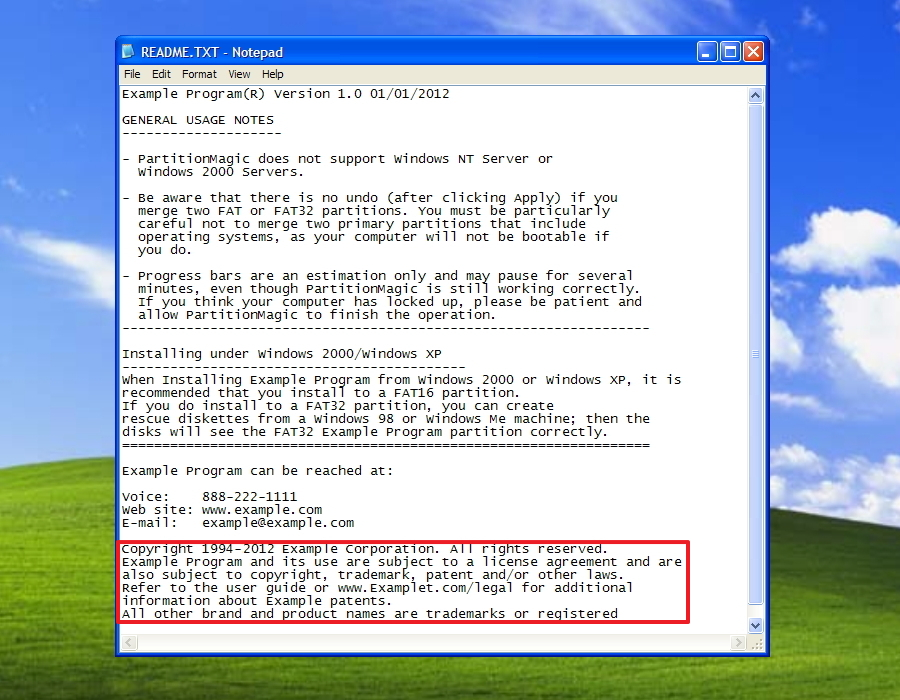

Wireframe
A wireframe is a plan outlining the basic structure of the elements of a website, webpage or digital interface -
its purpose is to give the viewer a rough idea of how content will be displayed and function in the final product,
such as banners, navigation bars, buttons, images, and articles.
In essence, a wireframe is the architectural "blueprint" of a web document.
READ MORE

README
The purpose of a README file is to provide important information for a project or piece of software.
It can include information such as:
- Installation/operating instructions
- Version info
- System requirements
- A basic description of the software
- Troubleshooting and support contact info
- Copyright and licensing info
- Source links
README files are commonly written in Markdown (.md), plaintext format.
READ MORE